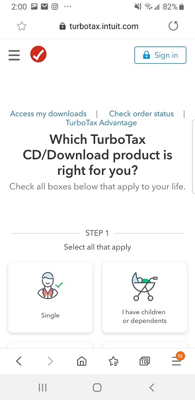
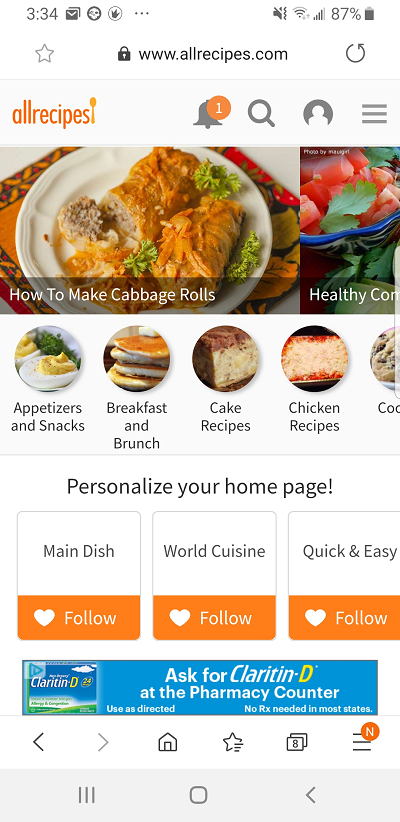
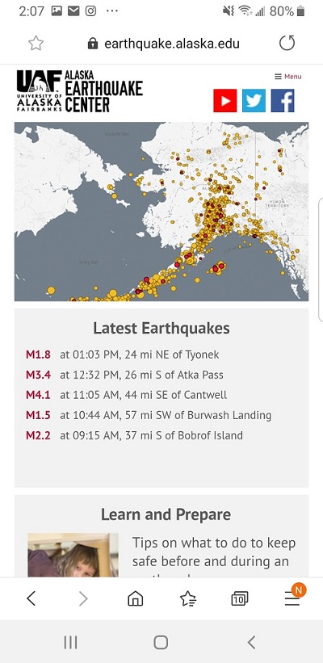

White space and clean design
Turbo Tax Website This sight is very clean and simple to see what is going on. There is ample space between sections and teh graphics that are displayed on the screen into the next page.
The page is not cluttered with content. I found it very easy to follow and it makes the message very clear to the user.
Hick's Law
All Recipes Website This site uses Hick's Law effectively help the reader find things quickly. The first row of images allows the reader to scroll sideways to select suggested recipes easily. The next group allows the reader to break down the opetions of recipes by categories.
The site also allows the user to personalize the user's home page for even easier access to their favorite foods. At the top of the site are easy to find and navigate icons to recieve notifications, search for items, access and update the user profile, and lastly a menu icon to direct the user to other portions of the site.
Visual Hierarchy
UAF Alaska Earthquake Center Website On this site, I found that they used visual heirarchy to bring the users attention to important piecces first. drawing attention to the map to identify areas where there were the most earthquakes. Then the reader goes down into the list of the latest earthquakes.
The reader can then scoll down and find out information about preparing for earthquakes and how to keep themselves and their families safe.
The one thing I did notice on this site was for the small screensize of a mobile phone, the menu icon is pretty small and hard to select.